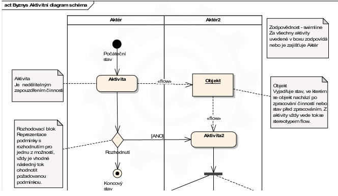

Business Modelovani
Zacatek
Do firmy prichazeji experti a snazi se zlepsit to jak pracujeme!
Napriklad tedy neco automatizuji, treba misto Davidova OneDrivu, pouziji automaticke buildy.
Cilem je snizit naroky na cas a penize.
Hlavnim rozdilem od klasickeho planovani aplikace je ten, ze ted ti "experti" problemy sami hledaji a zkoumaji je.
BM se sklada z nasledujicich aktivit
- Byznys diagramy pripadu uziti
- Aktivitni diagramy
- Objektove diagramy
Milnikem je to, ze experti vedi, jake procesy analyzuji, rekneme tedy treba
- Proces exportu
- Testovani aplikace
Napad rozsireni diagramu pochazi z tzv. Data Flow Diagramu

V tomto obrazku jsou relace typu extend a include. Ty se ale moc nepouzivaji, jsou nesrozumitelne pro klienta.
Musime najit nasledujici veci
- Hranice systemu
- Ucastniky
- Pripadu uziti
- Specifikaci pripadu uziti a tvorbe scenaru
Toto jsou klicove aktivity pro zjisteni toho, co se da vylepsit.
Pojdme si je rozebrat
-
Hranice systemu
Jinymi slovy, co vsechno musime splnit, aby byl produkt finalni.
-
Ucastnici
Nejsou to lidi jaj ale proste fakt role v procesu, treba i cas.
Funguje zde dedicnost, napr.
Uzivatel sefredaktor je pri pridavani vlastniho clanku v roli redaktora. Resp. uzivatel muze mit pristup k vice rolim
Abych mohli ucastniky identifikovat, musime se zeptat:
Kdo, nebo co, system pouziva, a jakou roli pri komunikaci se systemem hraje.
Muzeme z tohoto odvodit
-
Seznam zaznamu
Z nich lze odvodit budouci slovnicek pojmu a databazove tabulky.
-
Zjisteni atributu
Blizsi specifikace tabulky, otazky na vlastnosti budoucich atributu.
-
Manipulace s daty
Ze stavajiciho stavu zjistit, jake moznosti mame s manipulaci s daty vcetne zjisteni opravneni k pristupu jak z pohledu aktera, tak z pohledu procesu.
Neni prilis rozumne prirazovat roli Funkcionar, Hrac, Rozhodci, Trener, bez role Clen Svazu. Proto pouzijeme jinej diagram.

-
Pripad uziti
Strukturovany vycet veci, co muze "ucastnik" delat.
Projdou se vsichni ucastnici zjisti se, co kdo bude delat a co k tomu potrebuje. Potreba muze byt treba i opravneni atd.
-
Relace
Rozlisujeme tyto zakladni typy relaci
Prvni vec co udelame je hledani te zminene hranice.
Musime proste rozhodnout, co je uvnitr naseho systemu, a co neni.
Hranice je definovana uzivateli (ucastniky). Resp. je blbost implementovat neco co uzivatel nechce, nebo uz ma. TL;DR KISS
Z logiky funkcnich pozadavku je zrejme, ze by bylo dobre system rozdelit na dve casti.
Proc?
Je evidentni, ze pozadavky klienta deli system na
- Administraci
- Webovou prezentaci
Dalsim duvodem je prehlednost
Aktivitni diagramy
Aktivitni diagramy nemaji v datovem modelovani alternativu. Jsou to vlastne Stavove diagramu, obohacene o swimlines. Swimlines udavaji odpovednost aktera za konkretni aktivitu.
Jejich hlavnim ucelem je zachyceni procesu v zavislosti na case. Maji urcenou zodpovednost a s rozkladem procesu na aktivity.
Ukazuji jake aktivity se v tabulce budou provadet
Kazdy use-case musi mit svou navaznost v Aktivitnim diagramu.
Ukazeme si to na prikladu, kde pridavame clena fotbaloveho svazu.

I pres to, ze aktivitni diagram neni primarne urcen pro datove modelovani, lze jej pouzit. Musime pouze mezi aktivity pridame objekty, resp. udaje, ktere se predavaji.
K tomu pouzijeme "Objekt"
Timto rekneme, ze informace se spracuje ale neuklada se do databaze. Jinak bychom pouzily "Stereotyp Datastore"